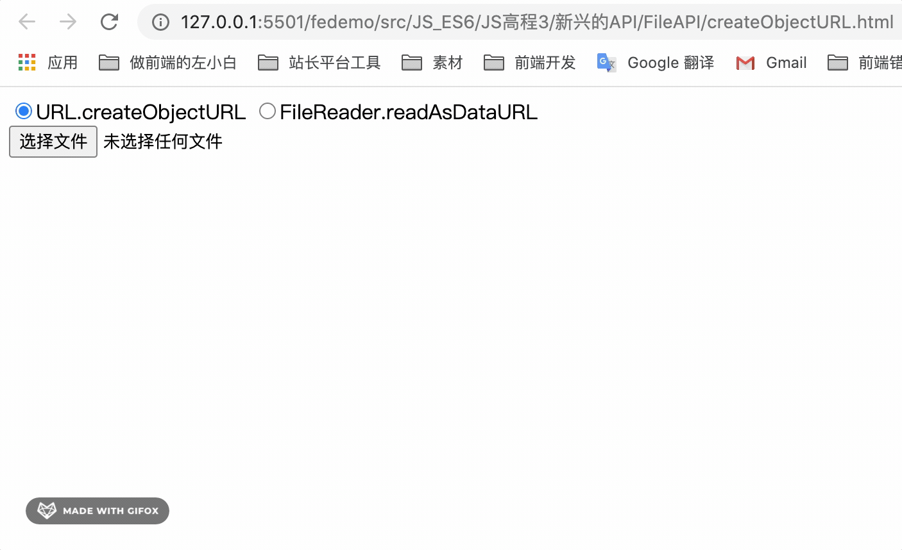

FileReader.readAsDataURL与URL.createObjectURL的区别
这篇文章发布于 2020/10/25，归类于 JavaScript
标签：
文件预览，文件下载函数，createObjectURL，readAsDataURL
在前端开发中，这两个函数都是可以用于处理文件二进制数据的，一般用于上传文件时预览图片，或者在下载、导出文件时使用。
下面来以上传图片、前端预览图片的功能为例，比较两个函数的的区别

下面的代码中，我们使用一个 radio 来切换使用两种方法。当检测到上传文件的 input 内容 change 后，根据当前 radio 的值，调用不同的方法来预览图片。运行效果如上图
<div>
<form id="form">
<label><input type="radio" name="type" value="a" checked>URL.createObjectURL</label>
<label><input type="radio" name="type" value="b">FileReader.readAsDataURL</label>
</form>
</div>
<input type="file" id="file">
<div><img src="" id="img"></div>
<div id="imgSrc"></div>
<script>
let file = document.getElementById('file')
file.onchange = function (e) {
let funcType = document.getElementById('form').type.value
if (funcType === 'a') {
// 方法1
// blob:http://127.0.0.1:5501/dffc0dee-93e7-4b8f-bee2-8a3b8671aeb2
let dataUrl = window.URL.createObjectURL(this.files[0])
document.getElementById('img').src = dataUrl
document.querySelector('#imgSrc').innerHTML = dataUrl
} else {
// 方法2
// data:image/png;base64,iVBORw0KGgoAAA....
let reader = new FileReader();
reader.readAsDataURL(this.files[0])
reader.onload = function (e) {
document.getElementById('img').src = reader.result
document.querySelector('#imgSrc').innerHTML = reader.result
}
}
}
</script>有上面的例子可以得出
- readAsDataURL 它是将二进制文件数据转成了 URI，base64数据。
- createObjectURL 它是二进制文件数据转成了临时的 URL，是 URL 链接。
这里假设我们拿到数据后，进行下载，一般使用 a 标签，再 click。如果是 IE，使用 window.navigator.msSaveBlob。假设我们使用下面的函数来进行下载。如果createObjectURL 生成的 URL，是没问题的，但如果是 readAsDataURL 生成的 base64 就会出现兼容性问题、卡顿问题。
因此在图片预览时可以使用 FileReader.readAsDataURL，但下载文件时，就需要使用 URL.createObjectURL 了。
function downloadFile(dataUrl) {
// 如果是IE，特殊处理，防止IE下提提示 "拒绝访问"
// blob拒绝访问文件 fix
if (window.navigator.msSaveBlob) {
try {
// 根据实际情况加后缀名
window.navigator.msSaveBlob(dataUrl, '下载文件.zip')
} catch(e) {
console.log('msSaveBlob异常', e)
}
return
}
const downloadEl = document.createElement('a')
downloadEl.href = dataUrl
downloadEl.download = '下载文件' // download文件名
document.body.appendChild(downloadEl)
downloadEl.click()
}参考：